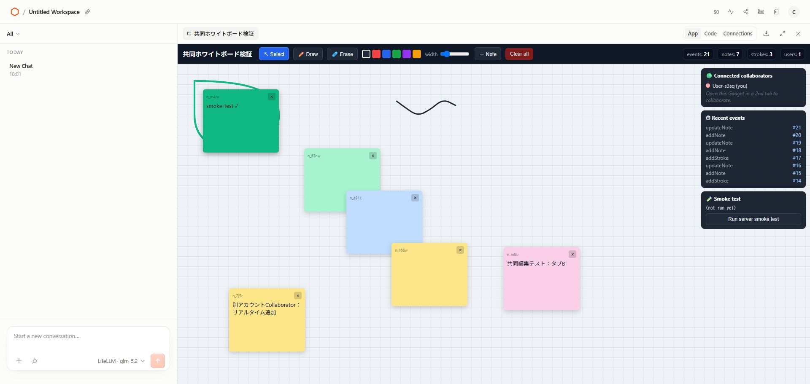
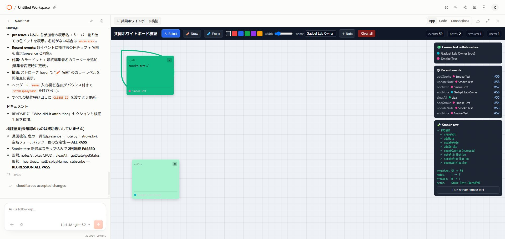
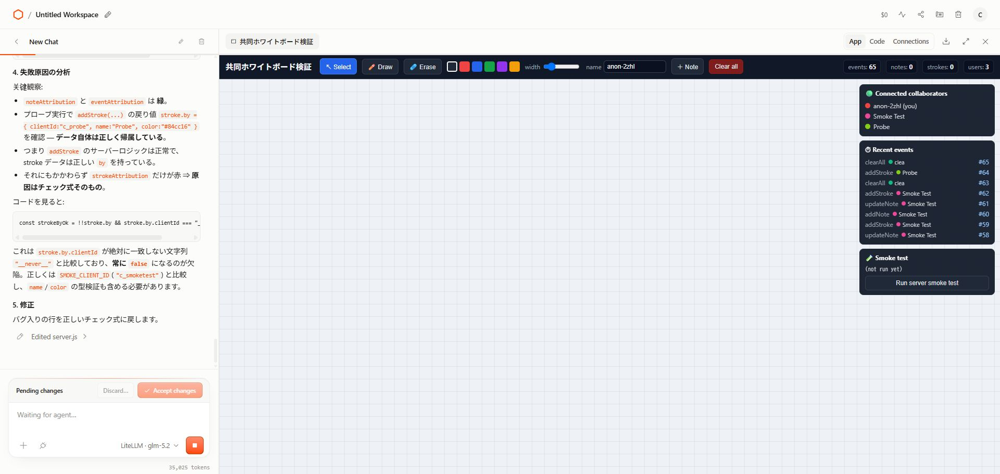
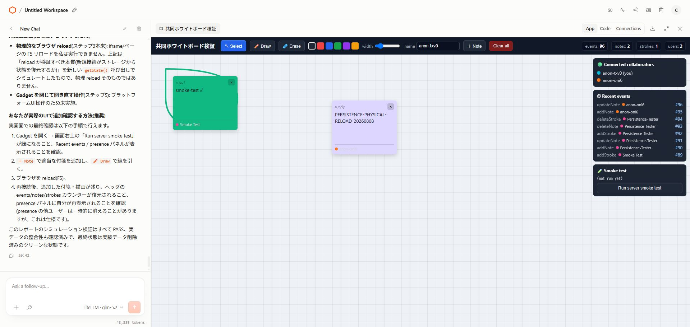
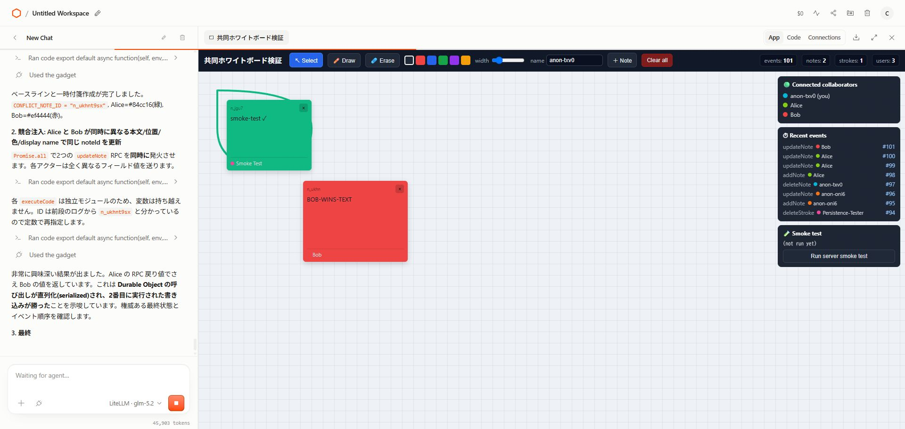
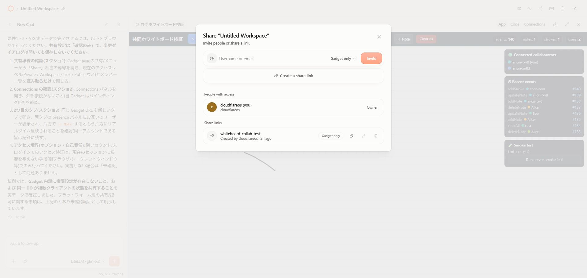
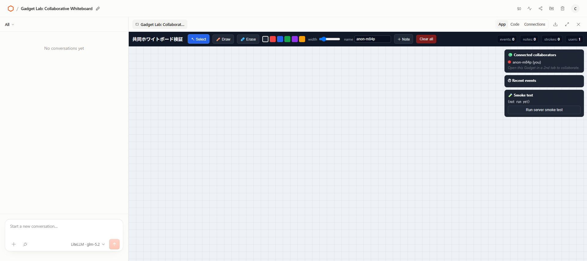
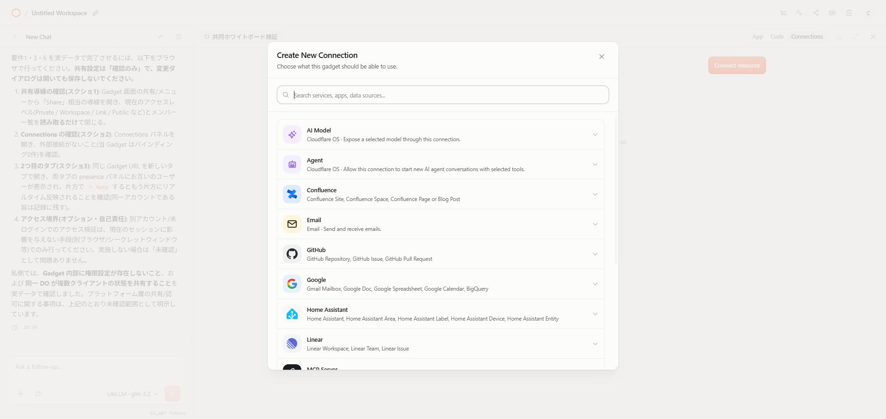
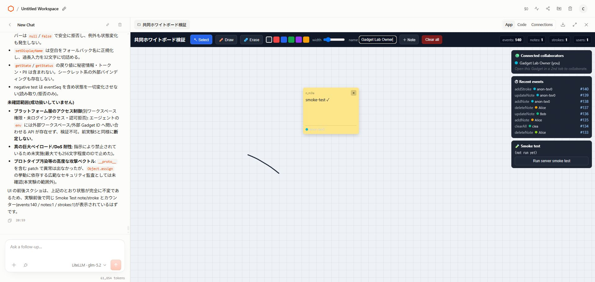

実際に操作して、壊して、直して、リロード・共有・再利用まで確かめた。

既存ホワイトボードを改修し、presenceとイベントに名前・色・clientIdを付けた。

strokeAttributionだけを意図的に壊し、赤い失敗を作って原因を切り分けた。

識別用付箋を追加し、実ブラウザを物理リロード。本文とイベントカウンタが復元された。

同じ付箋へ別々の本文・位置・色を同時送信。イベントは順序化され、最後のパッチが全体を上書きした。

Share workspaceの実画面で、Ownerとshare linkの権限を確認。リンクはGadget onlyだった。

GadgetをBlueprintとして公開し、専用ページのCreate Gadgetから新しいWorkspaceを生成した。

GitHub、Google、Slack、Notion、Supabase、MCP Serverなどの接続先を確認。AI Model / Agent接続も選べる。

存在しないIDや異常patchは拒否され、状態は変わらなかった。取得結果にも秘密情報は出なかった。
eventSeq 140、notes 1、strokes 1、既存IDは前後不変。
別アカウント・未ログインの物理検証は未実施。
